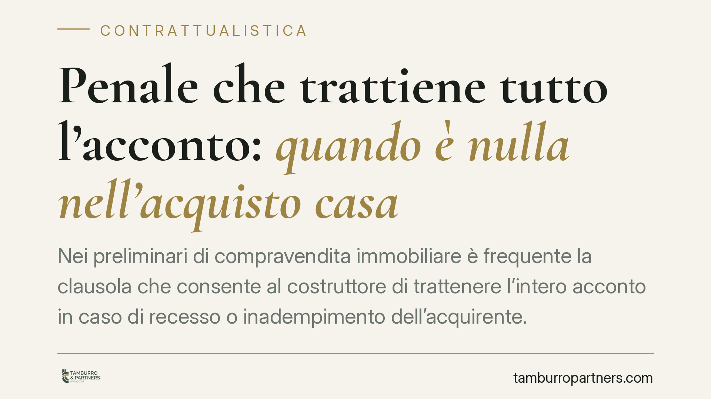

Penale che trattiene tutto l'acconto: quando è nulla nell'acquisto casa
Nei preliminari di compravendita immobiliare è frequente la clausola che consente al costruttore di trattenere l'intero acconto in caso di recesso o inadempimento dell'acquirente. Una recente pronuncia della Corte di Cassazione conferma che tale clausola, se manifestamente sproporzionata, è nulla perché vessatoria e può essere rilevata anche d'ufficio dal giudice, nel rispetto dei limiti processuali.

Il caso
Un acquirente consumatore versa un maxi acconto al costruttore in sede di contratto preliminare. Il contratto prevede che, in caso di recesso o inadempimento dell'acquirente, il venditore trattenga l'intera somma a titolo di penale. L'importo trattenuto risulta però sproporzionato rispetto al prezzo complessivo dell'immobile.
La Corte di Cassazione è tornata sul tema confermando un principio consolidato: una penale di questo tenore ha carattere vessatorio e, quando il rapporto è tra professionista e consumatore, è colpita da nullità di protezione. Il giudice può rilevare tale nullità anche d'ufficio, nei limiti che vedremo.
*Nota: il riferimento alla specifica pronuncia (indicata come sent. n. 21771/2026) è in corso di verifica quanto a numero e anno; il principio esposto riflette comunque l'orientamento ormai stabile della giurisprudenza di legittimità e della Corte di Giustizia UE.*
Inquadramento normativo
La disciplina di riferimento è il Codice del consumo (D.lgs. 206/2005), attuativo della Direttiva 93/13/CEE sulle clausole abusive nei contratti con i consumatori.
L'art. 33, comma 2, Cod. Consumo elenca le clausole che si presumono vessatorie fino a prova contraria. Tra queste rientra quella che impone al consumatore, in caso di inadempimento o ritardo, il pagamento di una somma a titolo di risarcimento, penale o altro titolo equivalente di importo manifestamente eccessivo (la lettera esatta dell'elenco va verificata puntualmente nel testo vigente, in quanto oggetto di modifiche).
Il carattere vessatorio (art. 33) va distinto dal regime sanzionatorio: è l'art. 36 Cod. Consumo a prevedere la nullità di protezione della clausola abusiva. Si tratta di una nullità parziale — che colpisce solo la clausola, lasciando in vita il resto del contratto — e che opera a vantaggio del solo consumatore. L'art. 34 individua i criteri di valutazione della vessatorietà.
Sul piano codicistico, la penale manifestamente eccessiva incontra anche il rimedio generale dell'art. 1384 c.c., che consente al giudice la riduzione equitativa dell'importo. Nei rapporti con il consumatore, tuttavia, la nullità di protezione ex art. 36 è rimedio più incisivo, perché può condurre alla caducazione integrale della clausola e non alla sua mera riduzione.
Quanto alla rilevabilità d'ufficio, la Corte di Giustizia UE ha ripetutamente affermato il dovere del giudice nazionale di verificare, anche senza domanda di parte, l'abusività delle clausole. Tale potere va però esercitato nel rispetto del contraddittorio tra le parti e non consente di superare un giudicato interno né le preclusioni processuali già maturate. Non si tratta quindi di un potere illimitato esercitabile in qualunque fase.
Penale e caparra: due figure diverse
Attenzione a non confondere la penale con la caparra confirmatoria (art. 1385 c.c.). Quest'ultima consente alla parte non inadempiente di recedere trattenendo la somma ricevuta, o esigendo il doppio di quanto versato. Anche la caparra, però, è soggetta al controllo di vessatorietà: se nel contratto con il consumatore produce uno squilibrio significativo a danno di quest'ultimo, può essere sindacata e dichiarata abusiva.
Cosa cambia per chi acquista
Per l'acquirente consumatore significa che la clausola che svuota di fatto l'acconto non è intangibile. Anche in corso di causa, e pur in assenza di una specifica contestazione iniziale, il giudice può valutarne l'abusività. Resta però essenziale muoversi tempestivamente, perché le preclusioni processuali possono limitare l'intervento.
Per i costruttori e i venditori professionali, la conseguenza pratica è la necessità di rivedere i modelli contrattuali: clausole penali calibrate su importi proporzionati riducono il rischio di nullità e di contenzioso.
Cosa fare in concreto
- Fate verificare il preliminare prima di firmarlo: individuate le clausole di penale e caparra e valutatene la proporzionalità rispetto al prezzo.
- Conservate ogni documento di pagamento dell'acconto e tutta la corrispondenza con il venditore.
- Se il contratto è già firmato, non date per persa la somma trattenuta: fate valutare la possibile vessatorietà della clausola.
- In giudizio, sollevate per tempo la questione dell'abusività, senza affidarvi soltanto al rilievo d'ufficio, che incontra limiti processuali.
- Per i professionisti del settore, consigliamo una revisione periodica dei modelli di contratto alla luce della disciplina consumeristica.
Disclaimer
Contributo informativo a cura di Tamburro & Partners - Avv. Giuseppe Tamburro. Non costituisce parere legale.
Ogni contratto ha il suo equilibrio.
Se vuoi una revisione delle clausole o una redazione su misura, scrivi allo studio. Ti rispondiamo entro un giorno lavorativo.